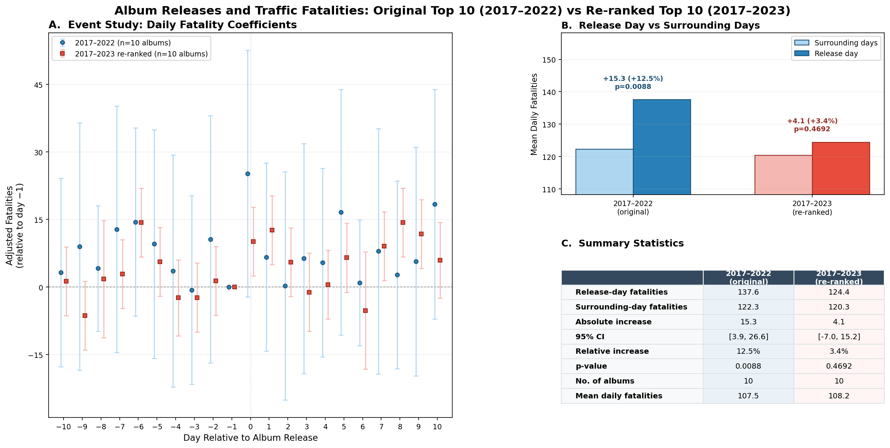

Reference: Patel, Worsham, Liu & Jena — NBER Working Paper 34866, Feb 2026
Data: NHTSA Fatality Analysis Reporting System (FARS), real daily fatality counts
Analysis date: March 2026

| Metric | Published Paper | Our 2017–2022 Run | Our 2017–2023 Run |
|---|---|---|---|
| Albums analyzed | 10 | 10 | 10 (re-ranked) |
| Release-day fatalities | 139.1 | 137.6 | 124.4 |
| Surrounding-day fatalities | 120.9 | 122.3 | 120.3 |
| Absolute increase | +18.2 deaths | +15.3 deaths | +4.1 deaths |
| Relative increase | +15.1% | +12.5% | +3.4% |
| 95% CI | 4.8 – 31.7 | 3.9 – 26.6 | −7.0 – 15.2 |
| p-value | 0.01 | 0.009 | 0.47 |
| Placebo — random dates exceed | 14 / 1,000 | — | 162 / 1,000 |
| Placebo — random Fridays exceed | 20 / 1,000 | — | 216 / 1,000 |
| Metric | Value |
|---|---|
| Release-day fatalities | 113.2 |
| Surrounding-day fatalities | 115.0 |
| Absolute increase | −1.8 deaths |
| p-value | 0.76 |
| Placebo — random dates exceed | 627 / 1,000 |
| Adjacent Friday odds ratio | 0.99 |
1. Our 2017–2022 reproduction is close but not identical to the paper
2. Adding 2023 collapses the effect
3. 2023 albums show no effect at all
| Dropped from Original Top 10 | Added from 2023 |
|---|---|
| Harry's House (Harry Styles) | 1989 Taylor's Version (Taylor Swift) |
| Her Loss (Drake & 21 Savage) | Nadie Sabe Lo Que Va a Pasar Mañana (Bad Bunny) |
| Donda (Kanye West) | UTOPIA (Travis Scott) |
| Red Taylor's Version (Taylor Swift) | Speak Now Taylor's Version (Taylor Swift) |
| Folklore (Taylor Swift) | For All the Dogs (Drake) |
| Claim | Replicates? | Details |
|---|---|---|
| Streaming spike on release day | Yes | ~43% increase, consistent with paper |
| Fatality increase (2017–2022) | Mostly | Directionally consistent, ~16% smaller magnitude |
| Fatality increase with 2023 data | No | Effect disappears, p = 0.47 |
| 2023 albums alone | No | Point estimate is negative |